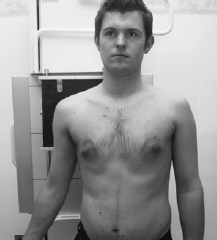

Acromioclavicular(AP)
Centering point:To the palpable AC joint
Perpendicular to cassette

Cassette Size:18cm x 24cm (8 x 10ins)
Landscape
Exposure Factors:60kVp
on 16MaS
FFD:100cm
Bucky/Grid:Moving or stationary grid
Filter:No
Collimation:Four sides of collimation
Closely collimate to the AC joint
Pathologies:Dislocation, subluxation
Position of patient and cassette
- The patient stands facing the X-ray tube, with the arms relaxed
to the side. The posterior aspect of the shoulder being examined
is placed in contact with the cassette, and the patient is
then rotated approximately 15 degrees towards the side being
examined to bring the acromioclavicular joint space at right angles
to the film.
- The cassette is positioned so that the acromion process is in
the centre of the film.